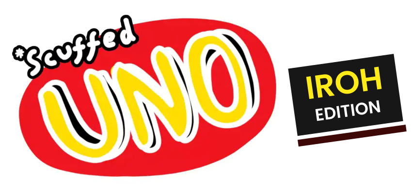

Original game by Freddie Nelson
Your friends. Your rules.
2–8 players · Private group lobbies · Bots
Connected by iroh. Hosted by you.The host's browser runs the room and must stay open. Browser traffic is encrypted through public iroh relays. The host is trusted with the deck and hands. Unofficial iroh port using ScuffedUNO's classic artwork. No accounts or original game servers.
Private lobby
Waiting for players
Your room
Players 1 / 8
Private · iroh
Rules (click to toggle)
Rule changes reset guest readiness. Settings are locked during a round.
Rule details & how to play
Click or tap a matching card to play it immediately. Click the deck to draw instead, or let a no-choice turn draw automatically. A wild opens the colour picker; a 7 opens the swap picker when that rule is enabled. Use Play / Keep above a playable drawn card. Force Play removes Keep. Keyboard: Tab to a card or the deck, then Enter or Space. Each house rule is independent. Draw penalties are automatic unless you can stack another matching draw card; then choose the stack or click the deck to take the penalty. Paying a penalty consumes your turn. Draw till playable stops at the first playable draw, not when an older card in your hand matches.
Outside a +4 stack, Wild +4 is legal only when you hold no card of the current colour. Jump-ins require the exact colour and number. A short window after the played-card animation gives other players time to jump in before the next normal action. No jump-ins during draw penalties or drawn-card choices. No +4 bluffing challenges. After playing your second-last card, your turn stays open: you have three seconds to call UNO, then opponents have five seconds to catch a missed call for a two-card penalty. You can still call before they catch you. No pre-arming or out-of-turn calls. Bots call automatically; swaps and rotations do not open a call window. Two-player Reverse skips the other player. Empty your hand to win.
With 7–0 enabled, hand swaps and rotations resolve before checking for a winner. New rounds begin with the host and a number card.